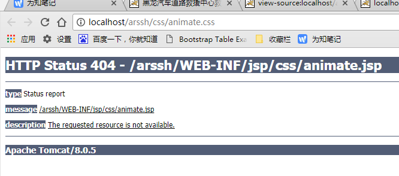
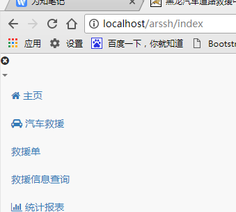
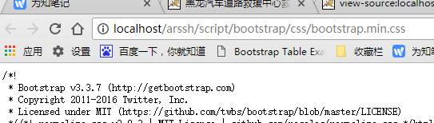

BUG


正常

SpringMVC提供<mvc:resources>来设置静态资源
但是增加该设置如果采用通配符的方式增加拦截器的话仍然会被拦截器拦截，可采用如下方案进行解决：
方案一、拦截器中增加针对静态资源不进行过滤(涉及spring-mvc.xml)

1 <mvc:resources location="/" mapping="/**/*.js"/> 2 <mvc:resources location="/" mapping="/**/*.css"/> 3 <mvc:resources location="/assets/" mapping="/assets/**/*"/> 4 <mvc:resources location="/images/" mapping="/images/*" cache-period="360000"/> 5 6 <mvc:interceptors> 7 <mvc:interceptor> 8 <mvc:mapping path="/**/*"/> 9 <mvc:exclude-mapping path="/**/fonts/*"/> 10 <mvc:exclude-mapping path="/**/*.css"/> 11 <mvc:exclude-mapping path="/**/*.js"/> 12 <mvc:exclude-mapping path="/**/*.png"/> 13 <mvc:exclude-mapping path="/**/*.gif"/> 14 <mvc:exclude-mapping path="/**/*.jpg"/> 15 <mvc:exclude-mapping path="/**/*.jpeg"/> 16 <mvc:exclude-mapping path="/**/*login*"/> 17 <mvc:exclude-mapping path="/**/*Login*"/> 18 <bean class="com.luwei.console.mg.interceptor.VisitInterceptor"></bean> 19 </mvc:interceptor> 20 </mvc:interceptors>

方案二、使用默认的静态资源处理Servlet处理静态资源(涉及spring-mvc.xml, web.xml)
在spring-mvc.xml中启用默认Servlet
1 <mvc:default-servlet-handler/>
在web.xml中增加对静态资源的处理

1 <servlet-mapping> 2 <servlet-name>default</servlet-name> 3 <url-pattern>*.js</url-pattern> 4 <url-pattern>*.css</url-pattern> 5 <url-pattern>/assets/*"</url-pattern> 6 <url-pattern>/images/*</url-pattern> 7 </servlet-mapping>
但是当前的设置必须在Spring的Dispatcher的前面
方案三、修改Spring的全局拦截设置为*.do的拦截（涉及web.xml）

1 <servlet> 2 <servlet-name>SpringMVC</servlet-name> 3 <servlet-class>org.springframework.web.servlet.DispatcherServlet</servlet-class> 4 <init-param> 5 <param-name>contextConfigLocation</param-name> 6 <param-value>classpath:spring-mvc.xml</param-value> 7 </init-param> 8 <load-on-startup>1</load-on-startup> 9 <async-supported>true</async-supported> 10 </servlet> 11 <servlet-mapping> 12 <servlet-name>SpringMVC</servlet-name> 13 <url-pattern>*.do</url-pattern> 14 </servlet-mapping>

这样设置，Spring就会只针对以'.do'结尾的请求进行处理，不再维护静态资源
针对这三种方案的优劣分析：
第一种方案配置比较臃肿，多个拦截器时增加文件行数，不推荐使用；
第二种方案使用默认的Servlet进行资源文件的访问，Spring拦截所有请求，然后再将资源文件交由默认的Sevlet进行处理，性能上少有损耗；
第三种方案Spring只是处理以'.do'结尾的访问，性能上更加高效，但是再访问路径上必须都以'.do'结尾，URL不太文雅；
综上所述，推荐使用第二和第三中方案